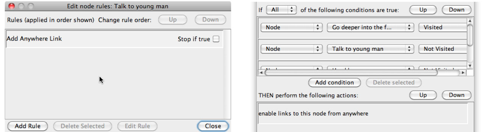

Anywhere nodes
Anywhere nodes are special nodes which are automatically linked from all other nodes. This allows for creations of sculptural hypertext.
The node rules in an anywhere node can specify conditions for when the anywhere node is available. When an anywhere node is created, one rule is automatically added to the node rules. This rule contains the special enable links to this node from anywhere action. As long as this rule's conditions are satisfied, a link to the node will appear at the bottom of every other node. The name of the anywhere node will be used for the link text. The node rules on an anywhere node which contain this special action are evaluated every time any node is entered, so that the links can be added to the node.

Note that a regular node will become an anywhere node if at least one of its node rules contains the Enable links to this node from anywhere action. If all the Enable links to this node from anywhere actions are deleted from an anywhere node, it will become a regular node.